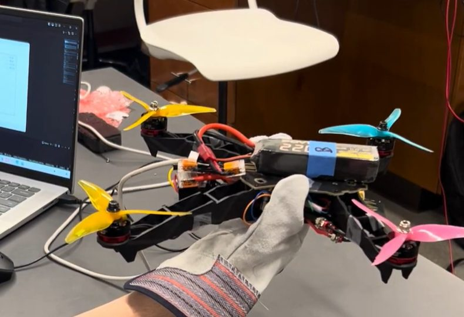

This project began as a final assignment in Pomona’s electronics course, then continued well into the summer. Our idea was to build a quadcopter from scratch and control it with a wearable glove rather than a conventional joystick.
The biggest decision we made was to do it all from scratch. Rather than buying an RC drone and repurposing it with open-source flight code, we decided we would learn the most by building and programming everything ourselves. That was also the hardest part: we spent two full weeks just fixing and calibrating our PID control architecture.
We used scavenged components, a 3D-printed frame, brushless motors, ESCs, an Arduino, and custom radio communication. Gyroscopic sensors measured hand orientation, while pressure sensing helped control altitude. I led electrical integration—including power distribution, wiring, sensors, and radio communication—and co-programmed and tuned the PID flight controller.
There was a lot of trial and error. During one poorly tuned test, the drone responded unexpectedly and sent me to the health clinic for stitches. We eventually achieved stable hover and gesture-controlled flight. More than anything, the project gave me practical experience integrating electronics, controls, and mechanical design into a working robot.